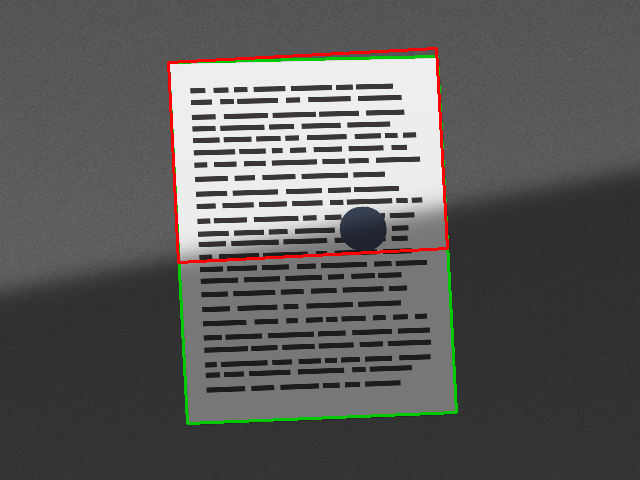
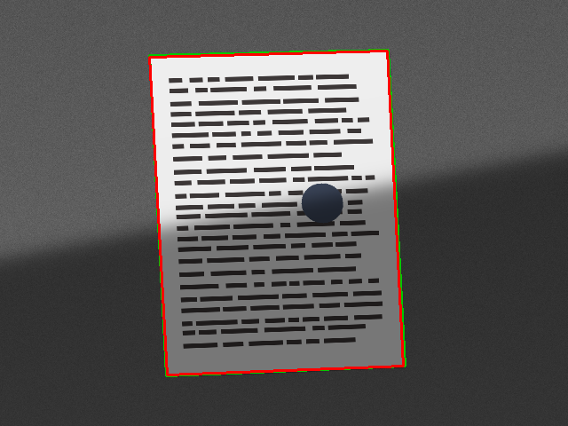

trace loop-20261014-140254-292656. All numbers below are read from saved experiment records.
| candidate | verdict | pass counts per corpus | regressions vs v1 | regressed categories |
|---|---|---|---|---|
| scanner_v2.py | REJECT | dev 99/112; targeted-shadow 12/12; heldout 153/168 | 27 | ['blur', 'noise'] |
| scanner_v3.py | REJECT | dev 88/112; targeted-shadow 8/12; heldout 130/168 | 48 | ['blur', 'clean', 'illumination', 'jpeg', 'lowcontrast', 'lowres', 'noise', 'perspective', 'shadow'] |
| scanner_v4.py | PARTIAL | dev 107/112; targeted-shadow 8/12; heldout 162/168 | 0 | [] |
| scanner_v5.py | PARTIAL | dev 111/112; targeted-shadow 12/12; heldout 166/168 | 0 | [] |
| scanner_v6.py | PARTIAL | dev 112/112; targeted-shadow 12/12; heldout 166/168 | 0 | [] |
| scanner_v7.py | ACCEPT | dev 112/112; targeted-shadow 12/12; heldout 168/168 | 0 | [] |
suite-20261014-140320-13f3f3)suite-20261014-140331-19f44d)verify-20261014-140348-f680da)verify-20261014-140356-e366b5)verify-20261014-140407-03aa19)verify-20261014-140416-cb8056)verify-20261014-140425-ab819e)verify-20261014-140434-c95099)| category | v1 | v7 |
|---|---|---|
| blur | 18/18 | 18/18 |
| clean | 6/6 | 6/6 |
| illumination | 16/18 | 18/18 |
| jpeg | 18/18 | 18/18 |
| lowcontrast | 13/18 | 18/18 |
| lowres | 18/18 | 18/18 |
| noise | 18/18 | 18/18 |
| perspective | 18/18 | 18/18 |
| rotation | 18/18 | 18/18 |
| shadow | 8/18 | 18/18 |
Case shown: shadow-L1-s200 (a v1 failure)


status: BLOCKED; verified_on_graviton=False. config/remote.json not found (no COOL Graviton instance configured)
dev and heldout were used while developing candidates; only final was untouched during iteration.